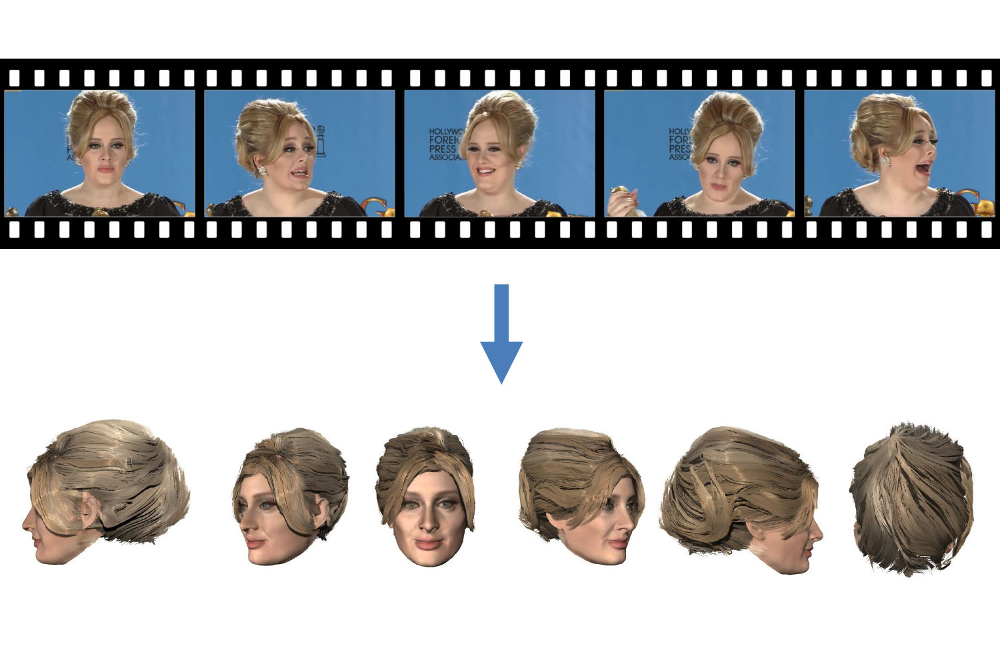
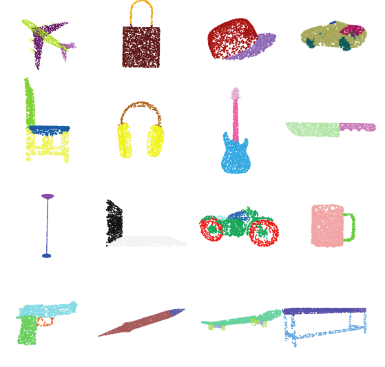
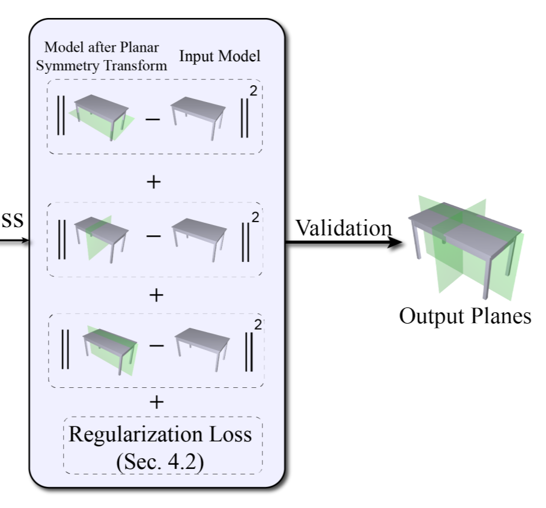
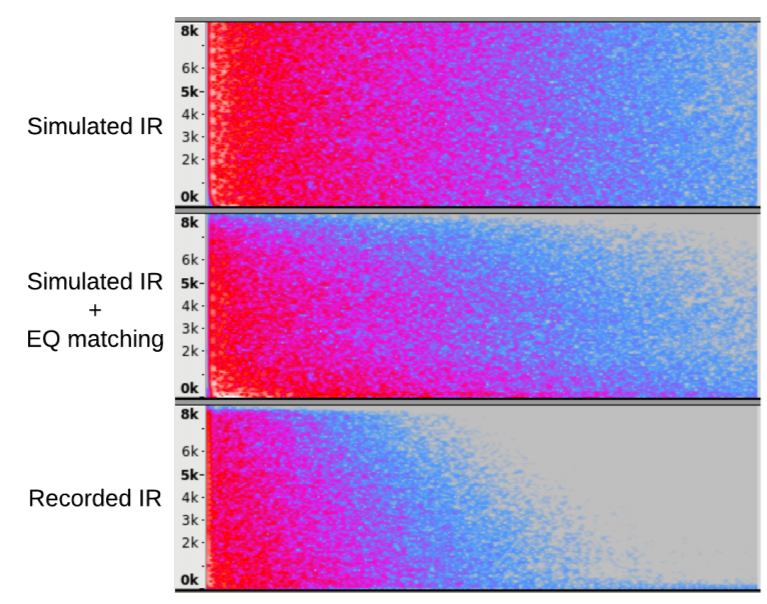

Hsien-Yu Meng
Mail, GitHub, Google Scholar, CV
My name is Hsien-Yu Meng(孟宪妤 in simplified chinese and 孟憲妤 in traditional chinese). I am currently a PhD student in Dept. of Computer Science, University of Maryland, College Park. Before that, I obtained MsC and BEng from Dept. of Computer Science and Dept. of Electronic Engineering, respectively, both in Tsinghua University.
I was a research engineer in a start-up company,Owlii, which aims to build the holographic platform, from Jan. 2016 to Mar. 2018. This is our realtime demo in SIGGRAPH 2017. My work consists of mesh deformation and facial animation. One of our work is accepted by SIGGRAPH ASIA 2018 (Video to Fully Automatic 3D Hair Model, supervised by Linda G. Shapiro and Ira Kemelmacher-Shlizerman).
I did research on point cloud segmentation algorithm, advised by Lin Gao, Yu-Kun Lai, and Dinesh Manocha. Our result outperforms the state-of-the-art by 30% in terms of Mean IoU on S3DIS indoor semantic segmentation dataset. Part of our work is accepted to ICCV 2019.
My research interests are in Computer Graphics, including pointcloud segmentation, non-rigid registration and facial performance capture.

Research
|  |
Video to Fully Automatic 3D Hair Model |
|  |
VV-Net: Voxel VAE Net with Group Convolutions for Point Cloud
Segmentation |
|  |
PRS-Net: Planar Reflective Symmetry Detection Net for 3D Models |
|  |
Low-frequency Compensated Synthetic Impulse Responses for Improved Far-field Speech Recognition |
Education
- Tsinghua University, Dept. of Computer Science. Aug. 2016 - Jul. 2019, MSc.
- Tsinghua University, Dept. of Electronic Engineering. Aug. 2012 - Jul. 2016, BS.
- Duke University, Carl E. Ravin Advanced Imaging Laboratories, research asistant, Jul. 2015 - Sep. 2015
Certificates and Skills
- UCSanDiego CSE167x: Computer Graphics, Link, GitHub
- Probabilistic Graphical Models 1: Representation, Link
- Neural Networks and Deep Learning, Link, GitHub
- Improving Deep Neural Networks: Hyperparameter tuning, Regularization and Optimization, Link, GitHub
- Convolutional Neural Networks, Link, GitHub
- Sequence Models, Link, GitHub